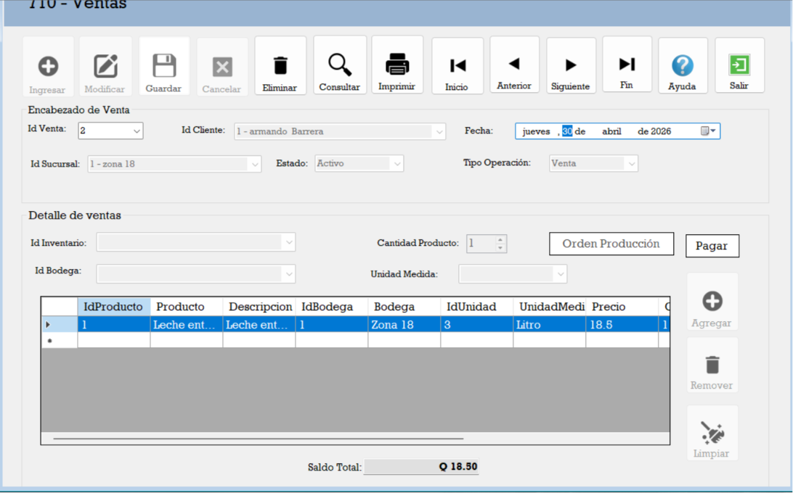
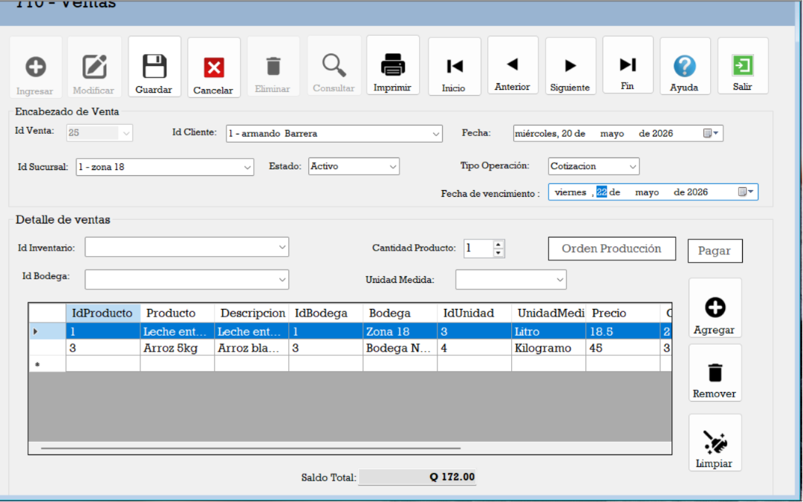
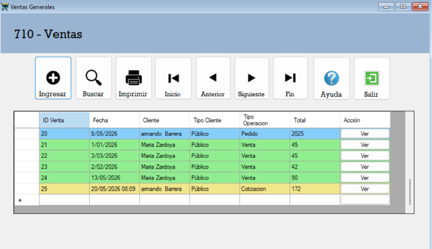

2. Encabezado y Detalle de Ventas
Este formulario permite registrar los datos del encabezado y detalle de las ventas, facilitando las operaciones de cotización, pedido y ventas según las necesidades del cliente.

Funcionamiento:
Botones de funcionamiento
Botón Ingresar: Habilita los campos para ingresar los datos del encabezado y detalle de la venta.
- Id Cliente: Debe tener un cliente asignado y especificar qué vendedor lo está atendiendo.
- Fecha de registro: Se asigna automáticamente la fecha actual del sistema.
- Fecha: Fecha específica de la operación.
- Id Sucursal: Identificador de la sucursal correspondiente.
- Estado: Estado actual de la operación.
- Tipo de operación: Si es un pedido o cotización, se habilita un apartado adicional para registrar la fecha límite de compra y continuar con el proceso.
- Id Inventario: Identificador del inventario relacionado.
- Id Bodega: Identificador de la bodega correspondiente.
- Cantidad: Cantidad de productos.
- Unidad de medida: Se completa automáticamente al ingresar el Id de inventario.
Botones adicionales para el detalle
Botón Agregar: Permite añadir un nuevo registro al detalle de la venta.
Botón Remover: Elimina el registro seleccionado del detalle de la venta.
Botón Limpiar: Limpia todos los campos del detalle para ingresar nuevos datos.
Botón Guardar: Guarda el registro y lo muestra en tiempo real en el formulario general de ventas.

Cambio de tipo de operación
Cotización
La cotización permite registrar los datos del encabezado y detalle de las ventas, con un color diferente amarillo.
Pedido
El pedido permite registrar los datos del encabezado y detalle de las ventas, con un color diferente como celeste
Venta
La venta permite registrar los datos del encabezado y detalle de las ventas, con un color diferente como verde
